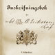

Artikel av Bengt Löf. Tidigare publicerad i tidningen Rovbladet.
Det är väl en så där 10 år sedan som jag började med att försöka ta reda på vilken historia som fanns om min släkt och gården Per Nirs i Dalkarlsbo. Det har liksom blivit en vana att fördjupa sig i det förgångna under årets mörka och kalla perioder. I och för sig gjorde jag ett försök som 17-åring då jag använde den gamla Hedesunda släktboken och skrev ner släkttavlan på en uppvikt kartong. Men jag har inget minne varför jag gjorde detta och sedan kom förstås en hel del annat av intresse emellan.
I 1997 års förnämliga Hedesunda Släktbok fanns massor av gamla släktingar att flytta in i det nu digitaliserade släktträdet. Det gick fort att få ihop hundratals anfäder och anmödrar och nu kom de på rätt plats i trädet på en gång. Jag har ju släkt i ungefär var tredje gård i Hedesunda socken och därför blev ju släktboken ovärderlig för mig. Sedan finns också från 1970-talet Östervålabon Ingvar Idestams avskrifter av Hedesunda kyrkböcker att jämföra med så det blev rätt på en gång hoppas jag.
Men inte allt är lika lätt. Det finns fortfarande några hål att fylla ett antal generationer bakåt. Ett exempel som har gäckat mig ordentligt är Inspektorn på Hade gård under senare delen av 1700-talet. Han hette Jonas Lindgren och var enligt alla källor ”född i Södermanland 1729”. Han flyttade till Gysinge 1766 efter att hans första hustru dog när de bodde i Jumkils församling i Uppland. Utöver födelseåret finns bara en anteckning om att han flyttade från Stockholm till Jumkil 1762. Jag har letat i arkiven efter ytterligare spår att följa men förgäves. Vintern 2007 – 2008 när jag fick alla kyrkböckerna direkt på datorn tog jag mod till mig och gick igenom alla Södermanlands födelseböcker från 1729 och för säkerhets skull tog jag också med alla södra Stockholms församlingar eftersom de ju ligger i landskapet Södermanland. Efter två månader och 182 församlingar fick jag likafullt ge upp. Jodå jag var också till Stockholms Stadsarkiv utan att få napp. Men jag tänker inte ge mig än. Någonstans finns han så klart även om han kan ha bytt namn.
En annan upptäckt som jag gjort hur är begreppet anförlust ter sig. I början registrerade jag glatt alla föräldrar direkt utan att tänka på att om man går tillbaka så där sju generationer eller mer så kan naturligtvis olika släkter ha samma anor i en socken som Hedesunda där man ”rodde över älven och friade”. Och det betyder inte att det finns kusingiften i mängd – jag har bara hittat ett enda. Men nog blir det lite av en fårfarm om man sträcker ut tillbakablicken mot 1700-talets början och tidigare.
Ibland kan man också lyckas med att sy ihop splittrad information till en konkret historia. Jag har ett bra sådant exempel och det är den tvetydiga bild som finns i mantalslängderna från 1600-talets början. Vi har ju i bykistan/gårdsarkivet en berättelse i original från 1730 där en dam ”efter mina förfäders berättelse vittnar” hur det egentligen gick till i generationerna efter grundaren av Per Nirs i Dalkarlsbo. Det är i sig en mycket intressant historia om att förskjuta den enda sonen och låta en dotter och hennes man ta över gården. Här finns inslag av familjeheder eftersom sonen hade hoppat ur skaklarna i äktenskapet – en straffbar sak vid denna tid. Men för att skriften skulle kunna bekräftas räcker det inte med att Länsman skrev ner den. Kvinnan måste identifieras. Ett år efter tolkningen av texten hittar jag en berättelse i den Uppländska grannförsamlingen Noras dödbok som i ett slag löste problemet. Prästen där i slutet av 1600-talet måste ha tyckt om att skriva i den nyss införda kyrkboken och särskilt när någon utsocknes fanns med. Han måste ha varit historiskt intresserad för normalt i dödböckerna hittar man bara en rad med basala uppgifter om den döde. Av denna text framgår helt klart att damen med den långa dödsrunan var modern till damen som skrev ner berättelsen 1730! Jag mådde bättre än prima under lång tid efter denna upptäckt. Senare har det också i domböckerna visat sig att historien var helt korrekt.
Det händer att man funderar över varför i all sin dar det kan vara ett nöje att gräva i gamla texter. Tja, det kan vara så att man vill lämna efter sig ett avtryck i något hörn. Men kanske också att ett genuint intresse om ursprung och historia är en drivande kraften. Hur som helst går forskningen vidare för min del med farfars 45 års dagböcker och fullföljande av de inte klarlagda anorna liksom gårdens historia under 400 år. Jag brukar skylla på att utan historia finns det ingen framtid. Men egentligen vet jag nog inte varför.
{kind=link}
{kind=link}